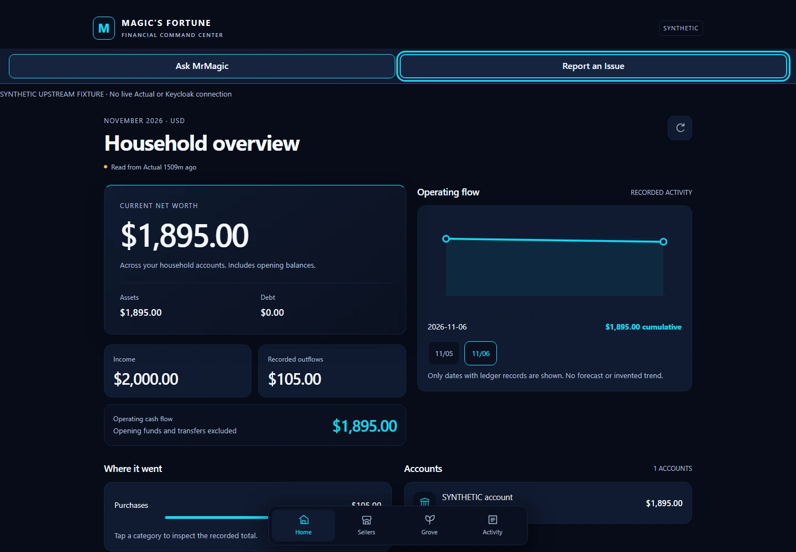
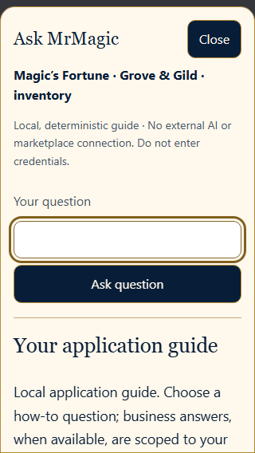
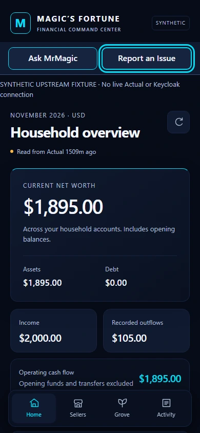

MRMAGIC SUITE · PERSONAL FINANCE + SMALL BUSINESS
Magic’s Fortune
Household finances and a small business. Kept private.
One private app on my own system: a household-finance workspace, and Grove & Gild, a section for running a small resale boutique.
- Status
- IN DEVELOPMENT · FICTIONAL RECORDS ONLY
- Accounts
- No live account connection
- Grove & Gild
- WORKS WITH FICTIONAL DEMO RECORDS · NOT YET IN DAILY USE
- Version
- Private v1 candidate · 9 November 2026


Accounts and transactions
Bring household records together while keeping where each one came from.
Spending and reports
Monthly views of where money goes, tested with fictional records first.
Each person in control
Separate access for each person, with backups and recovery planned before real use.
MAGIC’S FORTUNE · GROVE & GILD SECTION
Grove & Gild.
The boutique’s back office.
A small-business section inside Fortune for a resale boutique.
- Products and stock: what is listed, sold and still on hand.
- Orders and returns: shipping, cancellations and returns with restock.
- Fees, expenses and payouts: marketplace fees and shipping costs, with payouts kept separate from revenue.
- Monthly profit: by marketplace and by product, with CSV export.
Ask MrMagic, built in
How-to help on every Grove & Gild screen plus six business questions. It runs locally without AI or a marketplace connection.


CURRENT DEVELOPMENT INTERFACE / SYNTHETIC RECORDS
A real interface.
Fictional records.
Browser captures from the 9 November private v1 candidate. This is an offline qualification fixture, not a deployed financial service or a household account.
See the phone-width prototype capture


Development status
IN DEVELOPMENT / FEATURES STILL NEED DEMONSTRATION
Designed to bring household accounts, transactions, spending and reports together in a private app hosted on my own system. Support for multiple people, connected sources and different devices is planned and still needs demonstration.
No live financial dashboard or personal records are shown. No banking connection, multi-user login or AI capability is claimed operational.
a first version is prepared on my system but not yet in daily use. Real listings are not yet imported, and the screenshots use fictional or empty test records.
the vision extends beyond finance: ask about fitness from Magic’s Fortune, or paper trading from Fitness Companion. Answers should use only information the person is allowed to see, show their sources and say how recent they are. Connections between apps are planned and unproven. Financial questions and conversational AI still need their own working demonstrations. Try Ask MrMagic on this website ↗
Next steps
Make the essentials dependable.
Continue testing household reporting with fictional records, demonstrate source-grounded Ask MrMagic answers, and validate private access across supported devices. Account connections and cross-workspace integration remain development goals.